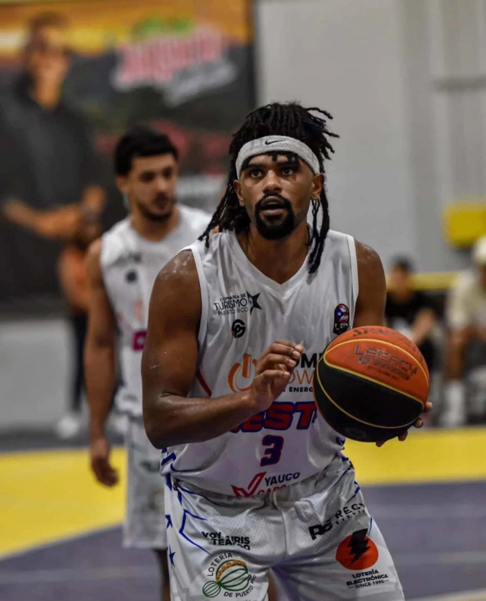

Justin Davis is a 6'4" swingman from Jersey City, NJ who has spent the last two seasons establishing himself in Puerto Rican professional basketball. After being drafted in the second round of the 2024 BSN Draft by Atléticos de San Germán, Davis has emerged as one of the most dominant players in the Liga de Baloncesto Puertorriqueña, earning back-to-back MVP honors while averaging over 24 points and 13 rebounds per game — numbers that reflect his ability to take over games on both ends of the floor.
A 2024 graduate of Felician University (NCAA D2), Davis is a physically imposing guard with a well-rounded offensive game — capable of scoring in the post, creating off the dribble, and stretching the floor from three. At 209 lbs, he brings a combination of size and athleticism that is difficult to guard at his position.
Liga de Baloncesto Puertorriqueña · Back-to-back MVP
Want to see your highlights on TGN?
Submit a Request